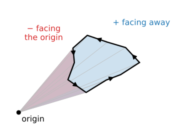
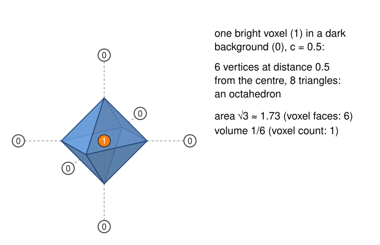
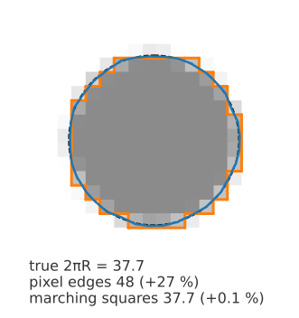
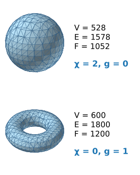
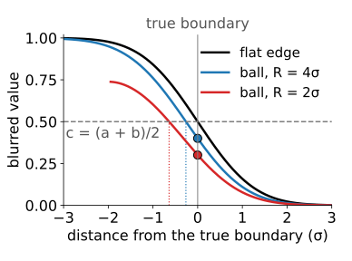
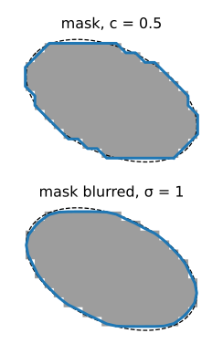

Area: the sum of the triangle areas. Each triangle’s area is half the length of the cross product of two of its edges.
Volume: pick any point, e.g. the origin. Each triangle and the origin form a tetrahedron; add up their volumes with sign (+ when the triangle faces away from the origin, − when it faces it). Parts outside the object cancel, and what is left is the volume inside: the 3D version of the shoelace formula.
This needs a closed, consistently oriented mesh (all normals pointing out). A surface that touches the border of the volume is open: pad the volume with background first.
Both are sums over triangles: cheap, even for millions of triangles.

The same in 2D: signed triangles from the origin add up to the enclosed area.
The math: area and the divergence theorem
For a triangle with corners \mathbf a, \mathbf b, \mathbf c (counter-clockwise seen from outside):
\text{area} = \tfrac12\,\lVert(\mathbf b - \mathbf a) \times (\mathbf c - \mathbf a)\rVert, \qquad V = \sum_{\text{triangles}} \tfrac16\,\mathbf a \cdot (\mathbf b \times \mathbf c) = \sum \tfrac16 \det[\mathbf a\;\mathbf b\;\mathbf c].
\tfrac16\det[\mathbf a\,\mathbf b\,\mathbf c] is the signed volume of the tetrahedron (\mathbf 0, \mathbf a, \mathbf b, \mathbf c).
Divergence theorem with \mathbf F = \mathbf x/3 (\nabla\cdot\mathbf F = 1): V = \iiint 1\,dV = \oiint \tfrac13\,\mathbf x\cdot\mathbf n\,dA. On a flat triangle, \mathbf x \cdot \mathbf n is constant (= \mathbf a \cdot \mathbf n), and \tfrac13 (\mathbf a\cdot\mathbf n)\cdot\text{area} = \tfrac16\,\mathbf a\cdot(\mathbf b\times\mathbf c).
In 2D the same argument with \mathbf F = \mathbf x/2 gives the shoelace formula.
Translating the mesh adds \tfrac16\,\mathbf t\cdot\sum(\ldots) = 0 for a closed mesh: the origin does not matter.
One bright voxel, by hand

One voxel of value 1, all neighbours 0, c = 0.5.
Each of the 6 edges to a neighbour is crossed halfway: t = 0.5.
The surface: an octahedron with vertices at distance 0.5 from the centre.
Area \sqrt3 \approx 1.73, volume \tfrac16.
Counting voxels: volume 1, area 6 (the voxel’s faces).
A single voxel is the extreme case; on large objects the two volume estimates agree, the areas do not (next slide).
Counting voxels: fine for volume, wrong for area
Volume = number of voxels inside × voxel volume. Errors at the boundary go both ways and cancel: a good estimate for large objects.
Area = number of exposed voxel faces × face area. Always too large: a slanted surface becomes a staircase, and a staircase is longer than the slope.
For a sphere about 1.5 times too large, at any resolution: finer voxels make smaller steps, but just as many of them per unit of area.
In 2D, the pixel-edge perimeter of a disk is 4/\pi \approx 1.27 times too long (for a convex shape it equals the perimeter of its bounding box).
Marching cubes cuts the corners: its area converges to the true area as the voxels shrink.

The math: where 1.5 comes from
A small patch of area dA with unit normal \mathbf n, replaced by a voxel staircase, exposes faces whose total area is its projections onto the three coordinate planes: (|n_x| + |n_y| + |n_z|)\,dA.
Averaged over all directions on a sphere, \langle|n_x|\rangle = \tfrac12 (the mean of |\cos\theta| over the sphere), so the staircase area is 3 \cdot \tfrac12 = \tfrac32 times the true area, independent of the voxel size.
In 2D: (|n_x| + |n_y|)\,ds, with \langle|\cos\phi|\rangle = 2/\pi on the circle: 4/\pi.
Weighting voxel configurations cleverly (Lindblad, 2005) reduces the bias to a few per cent without a mesh.
Try it: voxel faces vs marching cubes
Spacing, slices and topology
Anisotropic voxels: vertex positions use (\Delta x, \Delta y, \Delta z) (forgetting \Delta z scales every volume by \Delta x/\Delta z and distorts areas); gradient normals use them too (forgetting tilts the normals; recall volumes3d/).
Slice planes: the slice of an isosurface is an isocontour: the marching-squares contour of the slice lies on the mesh. A quick check of a surface against the image.
Topology: count connected components, boundary edges (edges with a triangle on one side only: cracks, or the volume border) and the Euler characteristic\chi = V - E + F.
For one closed surface, \chi = 2 - 2g with g the number of holes (handles): a sphere 2, a torus 0. Several components add up. Noise shows up as hundreds of components; a crack as boundary edges.

The math: Euler characteristic
Octahedron: V - E + F = 6 - 12 + 8 = 2. Any closed triangulated surface without holes: 2 (Euler’s polyhedron formula).
A torus made from an m \times n grid of quads, each split into 2 triangles: V = mn, E = 3mn, F = 2mn, \chi = 0.
\chi is a topological invariant: refining, decimating or deforming the mesh without tearing does not change it. For a closed surface with g handles \chi = 2 - 2g; for k components \chi = \sum_i(2 - 2g_i).
On a closed triangle mesh every edge has two triangles: 2E = 3F, so \chi = V - F/2 and F \approx 2V for large meshes (the “2 triangles per vertex”).
Choosing c
A blurred step edge between a dark level a and a bright level b, blurred symmetrically, passes the half-way value(a + b)/2 exactly at the true edge. Natural choice: c = (a + b)/2, from the two levels (read off the histogram).
On small or strongly curved objects the blur leaks brightness out of the object: at the true boundary the value is below half-way, the surface at c = (a + b)/2 lies inside, and the object looks too small (the partial-volume effect).
Plot the volume against c. A flat plateau: the measurement is robust. A steep curve: the result is mostly your choice of c; report it, or deblur/fit a model instead.
Thresholds from the histogram (Otsu and others) are the thresholding day’s tools; the same reasoning applies.

The math: the half-way level
A step from a to b at x = 0, blurred by a symmetric kernel g (e.g. Gaussian): I(x) = a + (b - a)\,G(x) with G the cumulative distribution of g. Symmetry gives G(0) = \tfrac12: I(0) = (a + b)/2.
For a ball of radius R blurred by a Gaussian of width \sigma: at a boundary point, the ball covers less than half of the Gaussian’s weight (the boundary curves away), so I(R) < (a + b)/2. The error grows with \sigma/R.
Sensitivity: \dfrac{dV}{dc} = -\displaystyle\oiint \frac{dA}{\lVert\nabla I\rVert}. A sharp edge (large gradient) gives a flat volume curve; a blurred edge a steep one.
Try it: volume against c
Smoothing: before or after?
Before extraction: Gaussian blur of the volume (in physical units, per axis). Removes noise, rounds corners, shrinks small and convex objects, removes thin structures. The surface stays a level set of a (smoothed) image.
After extraction: smooth the mesh, e.g. Laplacian smoothing (move each vertex towards the mean of its neighbours). Removes facets and terraces, but shrinks the whole surface step by step. Taubin’s two-step smoothing alternates a shrinking and an inflating step and keeps the size (mention only).
Either way, report what you smoothed: area is sensitive to it, volume less so.
Surfacing a segmentation
The output of thresholding, watershed (day 15) or graph cuts (day 27) is a mask (0/1) or a label image. Marching cubes at c = 0.5 on a mask puts every vertex at an edge midpoint: terraces, staircase normals, and an area that stays several per cent too large at any resolution.
Remedies: blur the mask slightly (σ ≈ 1 voxel) before extraction, or use a signed distance function (positive inside, negative outside, zero on the boundary; what the level-set day works with): its zero level set is placed with sub-voxel accuracy.
Label images: one surface per label (mask of label \ell, then marching cubes). Two touching labels give two surfaces with a small gap or overlap between them; methods that produce one shared surface exist (multi-label marching cubes, dual methods), pointer only.

In 2D, a slice through a mask: marching squares on the mask, and on the mask blurred first.
Mesh size and decimation
Triangles ∝ surface area / voxel area: about 3 per voxel² of area. A skull in a 512³ CT has about 10^6 voxel² of surface: about 3 million triangles.
Storage: shared vertices (1.5 million × 12 bytes + 3 million × 12 bytes ≈ 54 MB) vs a triangle soup with every triangle storing its 3 vertices (108 MB).
Decimation reduces the count where the surface is flat:
vertex clustering: snap vertices to a coarser grid, merge each cell’s vertices into one, drop collapsed triangles. Simple and fast; the topology may break;
edge collapse with quadric error metrics (Garland & Heckbert, 1997): repeatedly merge the two ends of the edge whose removal changes the shape least. The standard; mention only.
Always check area and volume after decimating.
Try it: binary masks and decimation
Summary
Area = Σ triangle areas; volume = Σ ⅙ det[a b c] (divergence theorem, the 3D shoelace); needs a closed, oriented mesh: pad first.
Counting voxels gives good volumes; counting voxel faces overestimates area by about 1.5× at every resolution (4/π in 2D). Marching cubes converges.
Use the spacing in positions and normals; check topology with components, boundary edges and \chi = V - E + F.
c: half-way between the levels for a sharp edge; blur and small objects bias the size (partial volume); a volume-vs-c curve shows how much the choice matters.
Masks give terraces: blur slightly or use a signed distance. Decimate big meshes, and re-check area and volume.